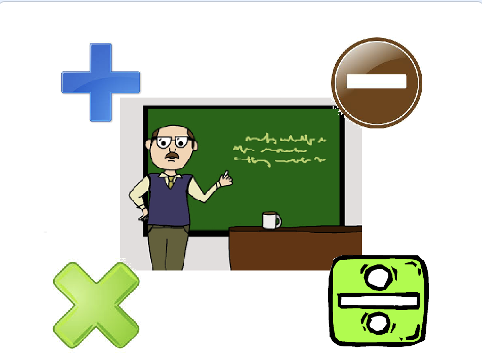

Necesitaremos al Profesor, Suma, Resta, Multiplicación y División.
No será necesario ninguno.
El juego consiste en que el Profesor nos preguntará como nos llamamos y nos pedirá dos números y luego tendremos que hacer un click en el resto de los objetos para saber el resultado de la suma, resta, multiplicación y división.

El Profesor lo posicionaremos como siempre en el centro del escenario. Posicion X/Y a 0.
Usaremos el bloque de "preguntar ¿Como te llamas?".
Al ejecutar el juego nos apaecerá una linea en blanco para rellenar. La respuesta se guardará en una variable de "respuesta"
y la mostraremos en el escenario mediante un bloque "decir". Necesitaremos otro bloque de "unir" ya que pondremos que el Profesor
nos conteste "Hola " "respuesta". Dejaremos un espacio en "Hola " para que no se junte con la respuesta.
De la misma forma diremos que nos escriba el primer número y lo guardaremos en una variable y luego le pediremos el segundo número guardandolo
también en otra variable. Ya que para hacer las operaciones necesitaremos como minimo dos números.
Cuando tengamos las dos variables rellenas con esos números que hemos pedido le diremos que acontinuación tiene que hacer click en
los objetos de las operaciones.
Objeto Suma lo primero es posicionar en el escenario el objeto ya continuación usaremos el bloque "decir". Usaremos tambien el bloque de "unir" y por último la operación que necesitemos, en este caso en operadores seleccionamos la suma.
Esto mismo haremos con el resto de los objetos de Resta, Multiplicación y División.
Y el juego quedaría así.

Para ver el juego terminado pulsa
aquí.
Para descargarte el juego terminado pulsa
aquí.